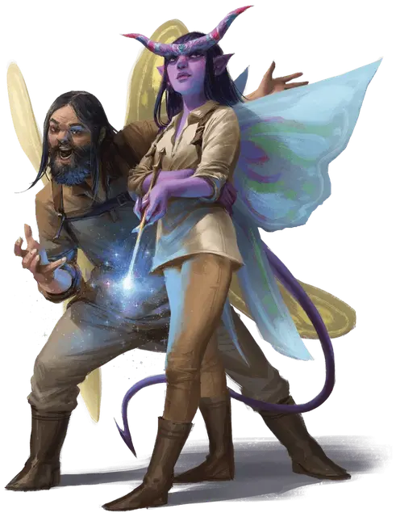

Подручный Ведьмосвета
Witchlight Hand

Ребёнком или подростком вы пробрались на Карнавал Ведьмосвета без намерения возвращаться назад, и заслужили своё место среди тех, чья работа за подмостками сцен поддерживает жизнь Карнавала. Вы, рабочие сцены, усердно работаете и не менее усердно развлекаетесь после. Ведьмосвет показал вам много фантастических миров, возвращаясь в ваш домашний каждые восемь лет, но вы не знаете о них почти ничего, поскольку всё время не покидали карнавала. Вы знаете других подручных, но личности владельцев карнавала - мистера Ведьма и мистера Свет - остаются для вас тайной даже после всех этих лет.
Может быть, вы присоединились к карнавалу, чтобы избежать унылости жизни дома, может быть, вас вело желание побывать в новых местах или же мечта стать одной из звёзд карнавала. Теперь же, когда вы повзрослели, карнавальная жизнь стала уже не такой привлекательной: ежедневные дела стали нудны, а цикличность пути карнавала - однообразной. Карнавал перестал зажигать в вашем сердце огонёк предвкушения чуда. Возможно, приключения ждут вас за вратами карнавала.
Владение навыками: Выступление, Ловкость рук.
Языки: Один на ваш выбор.
Владение инструментами: Набор для грима или один вид музыкального инструмента.
Снаряжение: Набор для грима или музыкальный инструмент на ваш выбор, колода карт, карнавальный костюм или униформа, одна безделушка (определяемая броском по таблице Фейских Безделушек), кошель с 8 зм.
УМЕНИЕ: Работник карнавала
Карнавал Ведьмосвета предоставляет вам бесплатные скромные жилье и пищу. Вдобавок вы можете свободно передвигаться по карнавалу и бесплатно принимать участие в играх и событиях карнавала, если вы не нарушаете спокойствие и не создаёте неприятностей.
Товарищ с карнавала
За прошедшие годы вы сдружились с другим обитателем Карнавала. Бросьте к8 и справьтесь с таблицей "Товарищ с Карнавала", чтобы определить, с кем вы подружились, или выберите любой вариант сами. Поработайте с вашим Мастером, чтобы придать жизнь этой дружбе. Товарищ болтается вокруг вас, пока вы на карнавале, но не станет добровольно его покидать.
| к8 | Товарищ с Карнавала |
| 1 | Старый, сварливый подручный Ведьмосвета |
| 2 | Молодой, впечатлительный подручный Ведьмосвета |
| 3 | Исполнитель (например, акробат, клоун или музыкант) |
| 4 | Бывший исполнитель |
| 5 | Опытный укротитель животных |
| 6 | Старый мерцающий пёс [blink dog] |
| 7 | Веселый спрайт [sprite] |
| 8 | Безвредный магический висп или огонёк (статблок не требуется, скорость полёта 30 футов, может парить, испускает яркий свет на 5 футов и тусклый ещё на 5) |